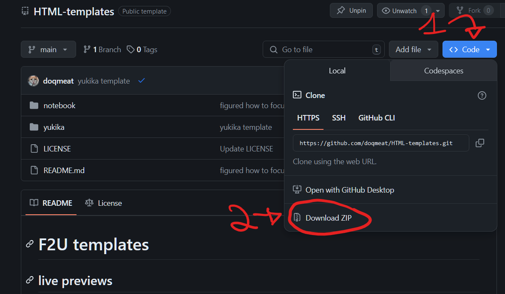

F2U yukika passport template
coded by doqmeat.com. can be downloaded via the "yukika" folder @ github. the next page of this passport shows how to download.
tested on firefox and chrome.
readable on mobile if you rotate your phone.
you can use this for whatever you want, and edit it to your hearts content!
a link back to my site is very appreciated if you use this template!
misc
this template was just me trying to recreate an old carrd template i did but instead with HTML, CSS, and JS. it was a very fun exercise!
it is inspired by the passport inclusion in yukika's soul lady album.
여권 passport


Name
yukika
Where
south korea
Age
?
Likes
???
Heading
answer
Heading
answer
Heading
answer
how to download:
- 
- unzip
- keep only "yukika" folder
- and that's it!
important note for those using neocities' dashboard: if using on neocities, keep in mind that you can't just drag folders into the dashboard bc neocities fucks them up bad. create the folder first and drop the items instead.
pics of the real passport ↴